The Uxntal Sign Language is a series of hand gestures representing uxntal numbers and opcodes.
The signs are meant to augment the student's current sign dialect, and disambiguate from commonly used signs, and decimal numbers that might be found in the names of labels.
Opcodes
| 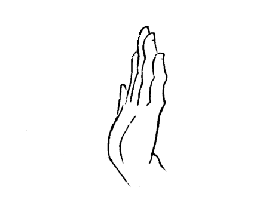 | 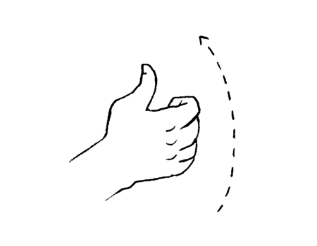 | 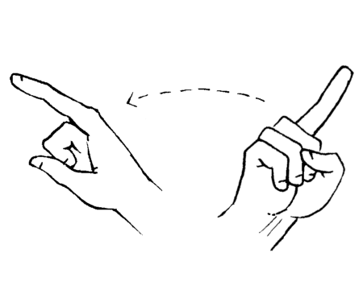 | 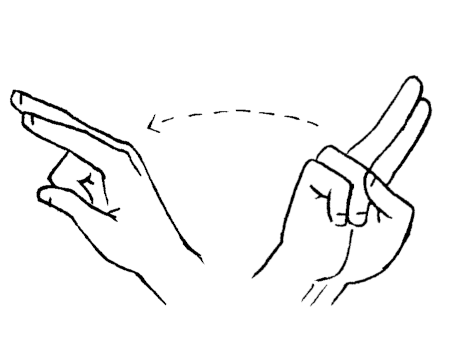 |
| brk | inc | pop | nip |
| 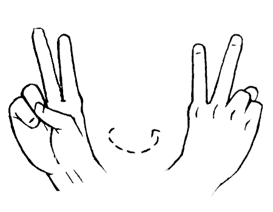 | 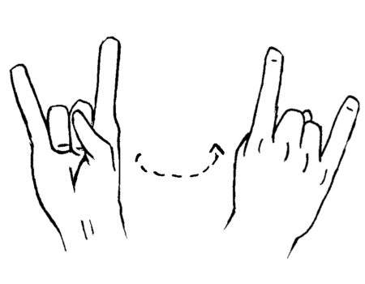 | 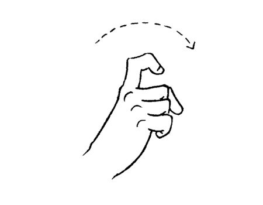 | 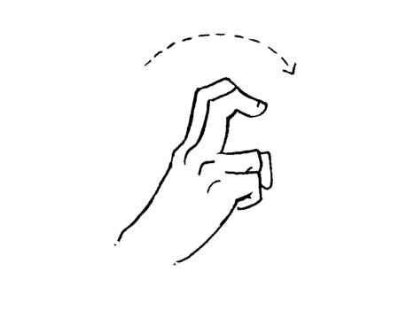 |
| swp | rot | dup | ovr |
| 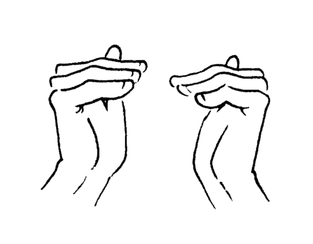 |  |
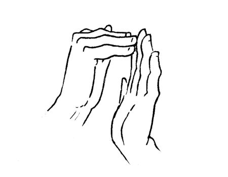 | 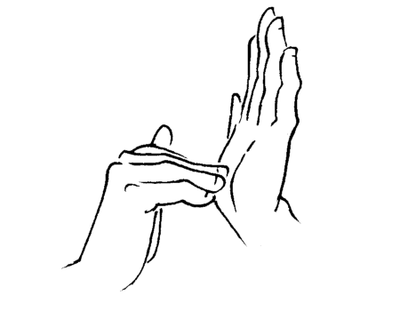 |
| equ | neq | gth | lth |
| 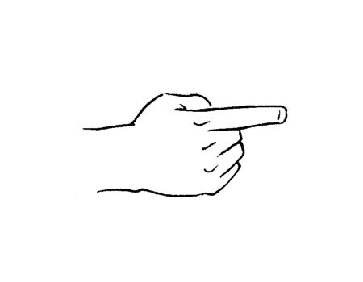 | 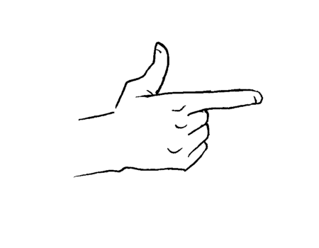 | 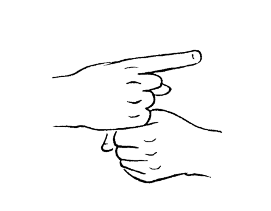 | 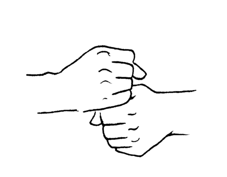 |
| jmp | jcn | jsr | sth |
| 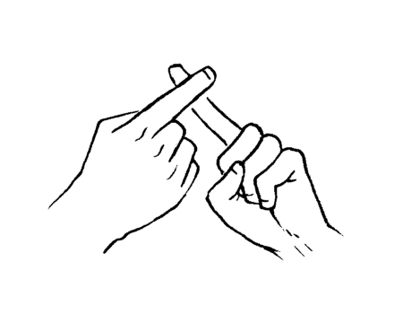 | 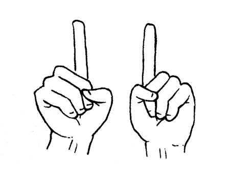 | 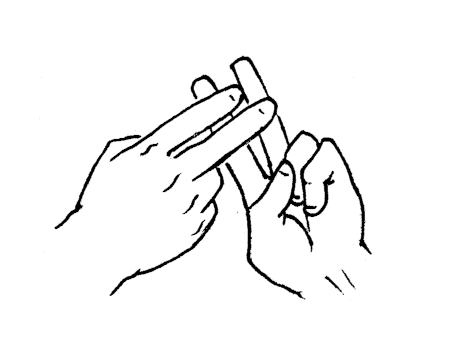 | 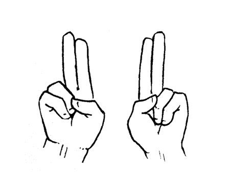 |
| add | sub | mul | div |
 |
 |
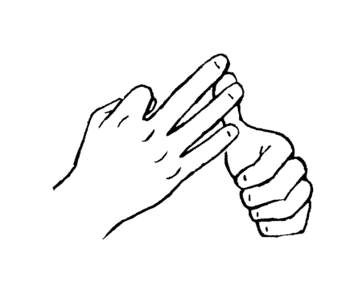 | 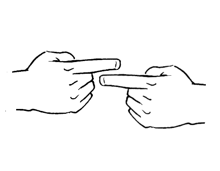 |
| and | ora | eor | sft |
Numbers
To sign numbers, such as the number two, which would be hard to do by sheer positioning of the finger, open your palm, and use your left index finger to push the ring finger out of your right palm. Don't try to extend the ring finger out on its own.
| 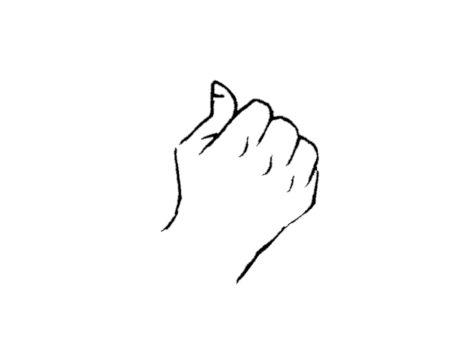 |  |
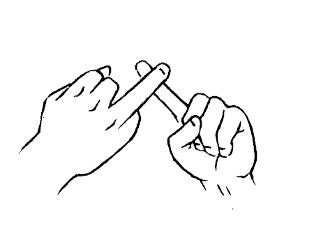 | 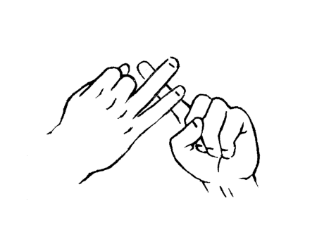 |
| 0 | 1 | 2 | 3 |
| 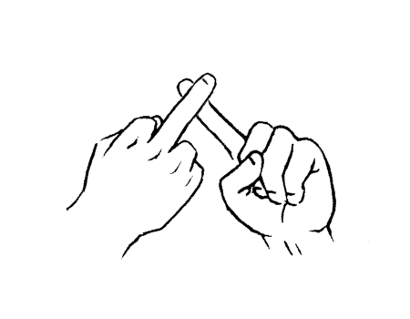 | 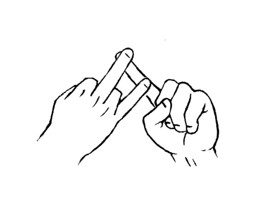 | 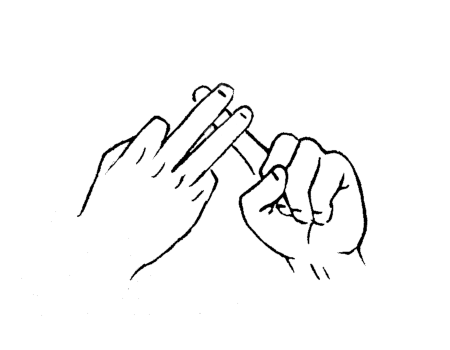 | 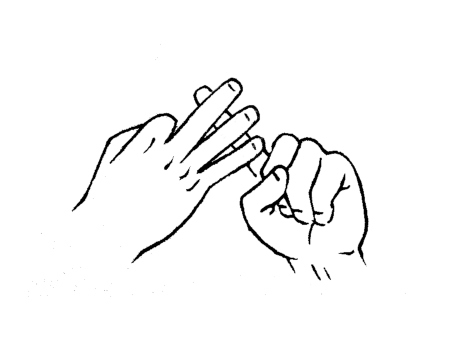 |
| 4 | 5 | 6 | 7 |
| 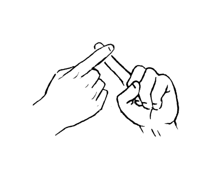 | 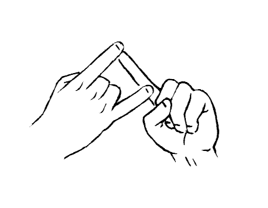 | 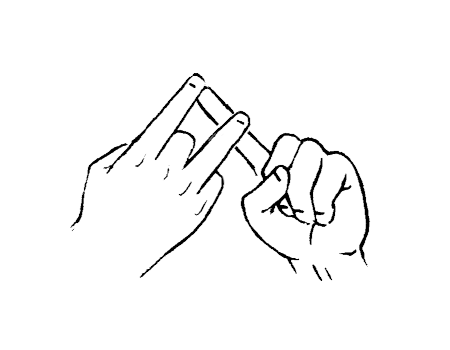 | 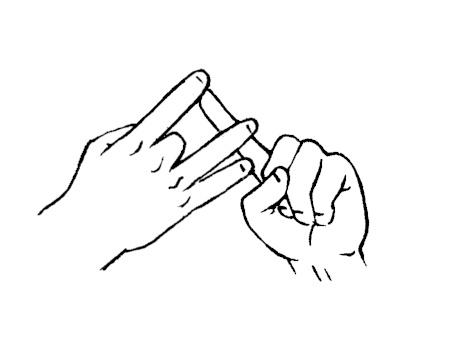 |
| 8 | 9 | a | b |
| 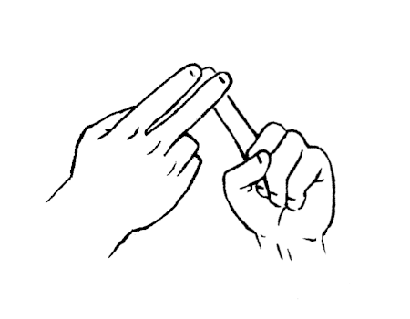 | 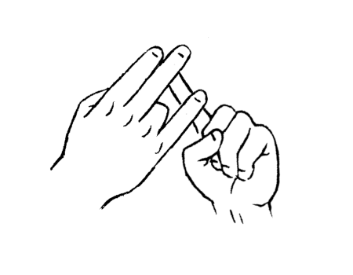 | 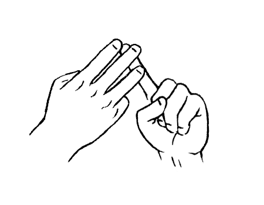 | 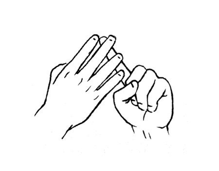 |
| c | d | e | f |
incoming: uxntal reference